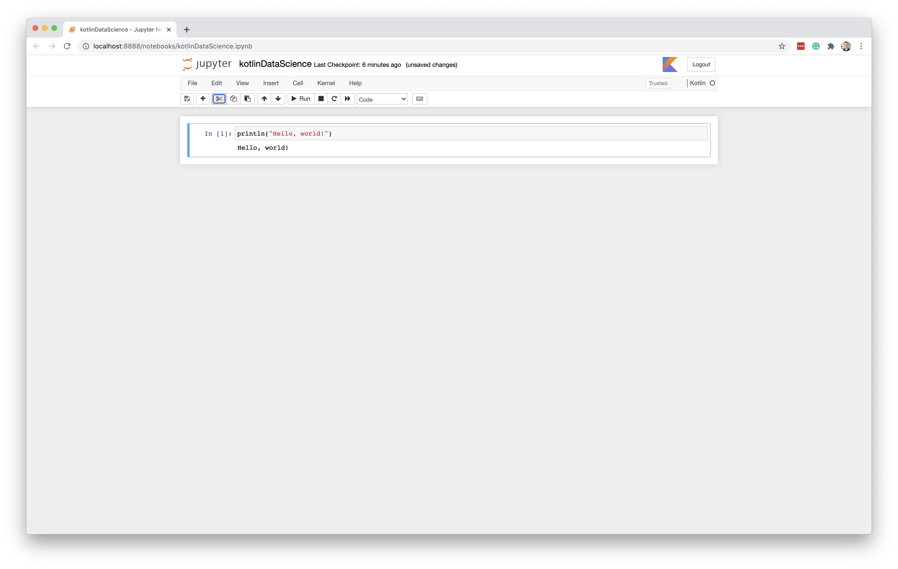
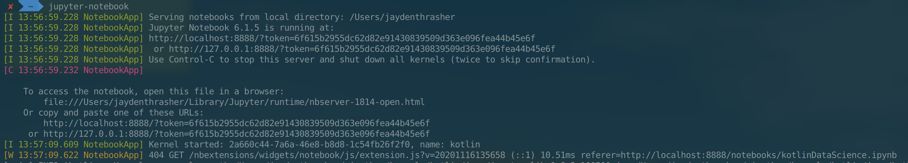
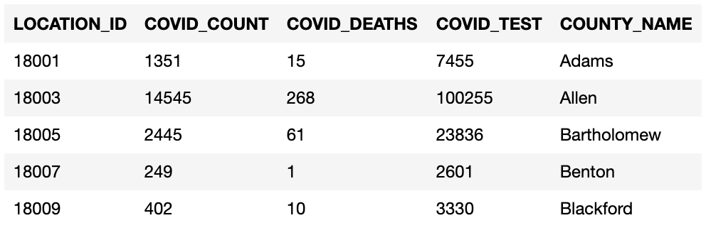
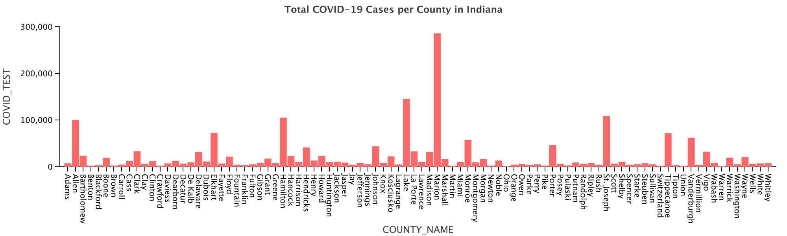
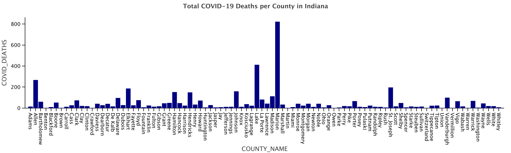
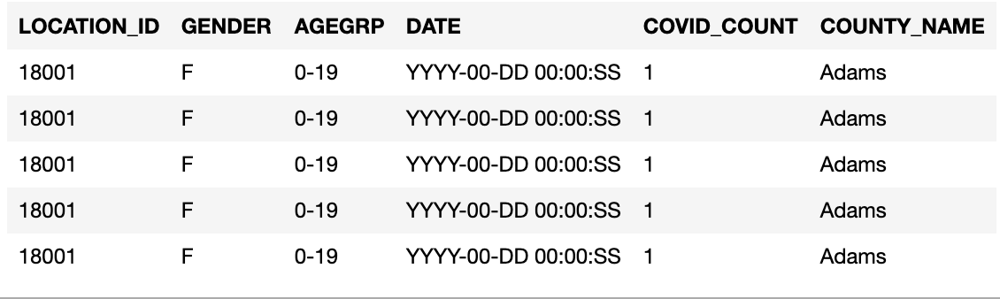
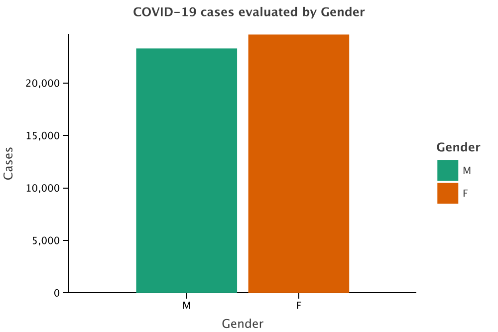
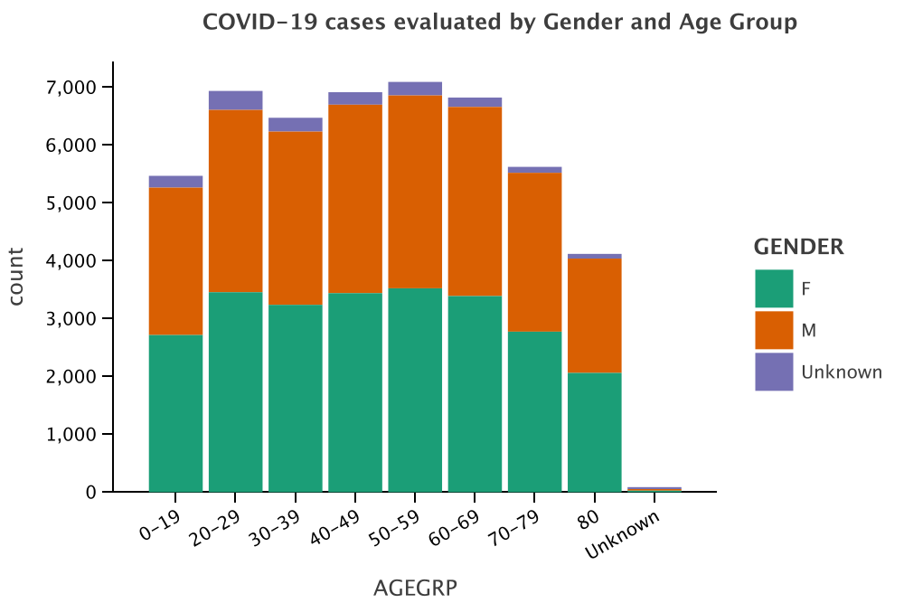
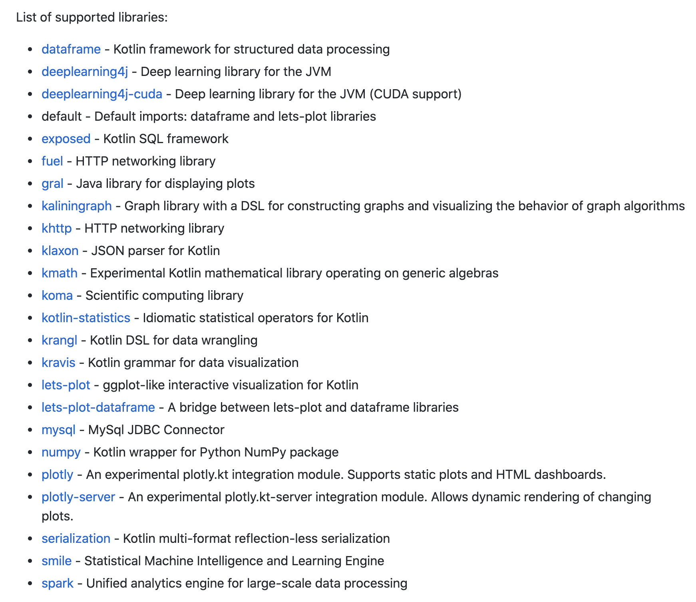

Data Science
Implementation
Before starting my in-depth exploration of Kotlin, I thought that this section of my final project was going to be the most straight forward. It actually turned out that this was one of the more painful sections to complete. Below, I will document my experiences with Kotlin for data science, and then I will compare this with the offerings from Python, the leading language in the data science domain.
To begin, I read the documentation, which mentioned two ways to get started. The first is by downloading and running a local Jupyter Notebook. This is an open source web application that allows you to create and share "notebooks" that contain a combination of code, markdown, and visualizations. Notebooks are great because they allow you to run code a block at time. When using a Jupyter Notebook, you will need to install the open-source Kotlin-Jupyter Kotlin Kernel since these notebooks primary run Python. Unfortunately this kernel is still in beta, so there are plenty of bugs, and it only works with certain versions of Jupyter. The second way that you can get started is through an alternative, and slightly less popular, notebook called Zeppelin. Additionally, if you are working in any Zeppelin version after 0.9.0, it already comes bundled with the Kotlin interpreter. Since I have some experience using Jupyter Notebooks, I decided to go this route and install the kernel myself.
When you first visit the kotlin-jupyter Github page, you will see three ways to install the kernel. Namely, you can use Conda, Pip, or build it from source. The first two are package managers for the Python language. Initially, I tried to install the kernel using pip, but couldn't get it working. Finally, I found another write-up explaining that the pip source is currently broken, so I built the kernal from source. Poor documentation turned out to be a theme when I was figuring out how to use Kotlin for data science. Currently, there are only 23 supported libraries that can be used with the Kotlin kernel. Of these, I focused on two. Namely, I used lets-plot and krangl. Lets-plot is similar to ggplot, a library for visualization within the R programming language. Krangl is a library for data wrangling within the Jupyter Notebook.
Below is a screenshot of me accessing the notebook with the Kotlin kernel for the first time, and the output from the Jupyter Notebook server.
 To gain some practice using all of these tools, I decided to analyze data on COVID-19, made available by the Indiana State Department of Health. The first data set that I downloaded can be found here. This dataset contains the number of COVID cases, COVID deaths, and COVID tests for each county in Indiana.
After downloading this data, I used krangl to read it into the notebook from a CSV file as a DataFrame object. Then, I was able to start parsing this DataFrame and visualizing the data. The first thing that I did was calculate the total number of tests administered, which I found to be 1952202 and the total number of positive results, which I found to be 256744. Then, I used these values to calculate the percentage of tests that come back positive. I found this value to be approximately 13.15%.
Next, I created a plot and several layers to visualize the effects of COVID-19 on various counties in Indiana. The first graph that I created was the total number of COVID-19 cases per county in Indiana. See the results below.
Then, I created another layer to visualize the total number of COVID-19 deaths per county in Indiana. As you can see, this graph is strikingly similar to the graph above.
Having extracted much of the useful data out of that dataset, I decided to explore another. This dataset was much smaller, but included datapoints on gender and age range as well as location in the state. This dataset was also provided by the Indiana State Department of Health, and can be found here.
My first interest in this dataset was how gender would effect the rates of contracting the virus. To analyze this, I used Kotlin to filter the dataframe on each gender and then calculated the total number of cases for both. Then, I used similar methods as above to generate a bar chart. This chart can be seen below. In Indiana, the number of cases seem to be independent of gender.
Finally, I used the DataFrame to generate one more layer that examined age range on the number of positive cases. Then, in each age range, I identified the number of individuals from each gender. This graph can be seen below. From this graph, we can see that more individuals of ages 50 to 59 have contracted the virus than any other age group.
Analysis
Of the four domains that I explored, data science was the least pleasant. Unfortunately, the community just is not there yet. As mentioned above, there are currently only 23 libraries that are supported for the Kotlin kernel, compared to the hundreds of libraries that could be found for python or even R. Below is an image of the list of supported libraries.
In the supported libraries, there is very little documentation. I frequently found myself diving into the source code to figure out how to use certain methods. All of that said, I really enjoy working with Kotlin collections, so I hope that this community will grow in the future. I think that Kotlin could potentially be a good fit for this domain because it allows for compact code that is highly writable. However, for Kotlin to thrive in this environment, there will need to be much more guidance.